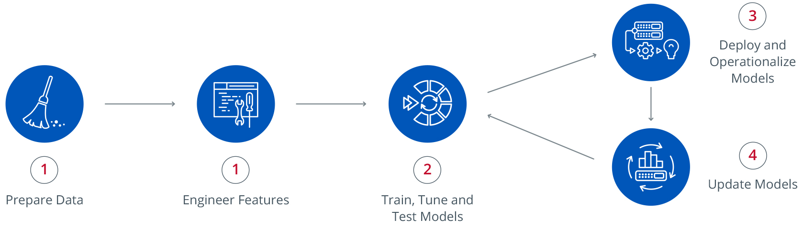

Machine Learning
 21 Feb 2018
21 Feb 2018
Machine Learning and Artificial Intelligence have been widely explored topics in the recent decades for science fiction filmmakers. Robots and machines which could learn and take decisions independently have been depicted in many famous movies. Today, thanks to the ideas of numerous mathematicians, filmmakers, and computer scientists we are very close to making this a reality.
ML and AI are not quite the same things, often used together it is important for us to understand the difference between them to avoid confusion. Machine learning is merely an application of AI it aims to allow the computers to learn automatically.
Machine learning is an application of artificial intelligence that provides systems the ability to automatically learn and improve from experience without being explicitly programmed.
Big data also plays a crucial role in ML as large quantities of data has to be analyzed before the computer arrives at a conclusion or learns something new. It involves feeding the computer with large data-sets, in order to look for patterns and infer from them in order to form a robust decision-making system.
Machine Learning algorithms are categorized into the following types:
Supervised Learning: These algorithms study and analyze data sets before predicting output values. The machine has to be well trained by providing several example inputs and outputs for it to arrive to make the right decision. The learning algorithm can also compare its output with the correct, intended output and find errors in order to modify the system accordingly.
Unsupervised Learning: These algorithms are used when the training data-set are neither classified nor labeled. The algorithm attempts to find a function which is used to arrive at a hidden structure from unlabeled data. The system doesn’t figure out the right output, but it explores the data and clusters them into classes or groups also called cluster analysis.
Semi-supervised Learning: It acts a crossover between the above-mentioned methods. It typically uses a small amount of labeled data and a large amount of unlabeled data for training. These algorithms improve learning accuracy to great extents. We use supervised learning techniques to make best guess predictions for the unlabeled data, feed that data back into the supervised learning algorithm as training data and use the model to make predictions on the unseen data.
Reinforcement Learning: These algorithms produce action and arrive at errors or rewards for the particular action. Trial and error methods are generally used in this form of learning. The algorithm uses a simple reward feedback system to maximize its performance and learn which action is best suited.
Machine Learning is being used in many fields from natural language processing to medical diagnosis. It helps to arrive at a faster and accurate solution to problems. Once a machine is carefully trained it can make more efficient and correct decisions than humans. AI and cognitive technologies are making ML even more effective in processing large volumes of information.
The demand for Machine Learning is increasing by the day as more and more organizations are adopting this technology in order to increase their efficiency. A career choice in ML will definitely reward an individual with an outstanding growth rate.